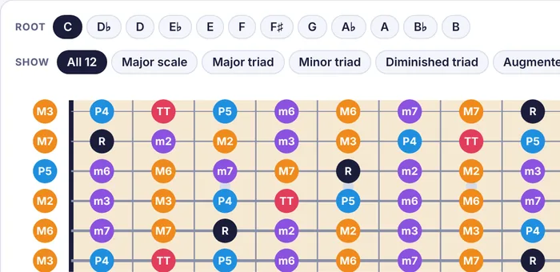
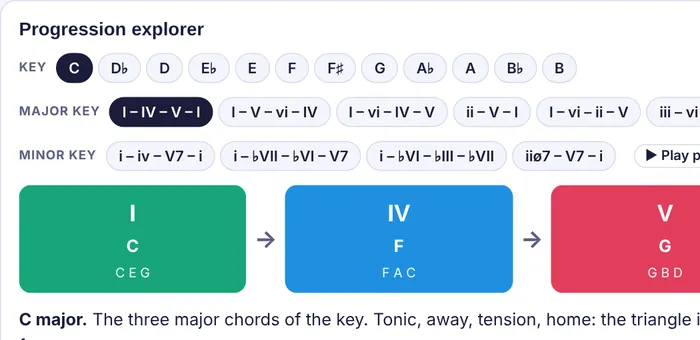
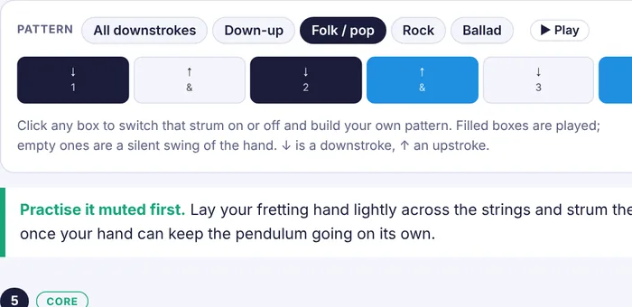
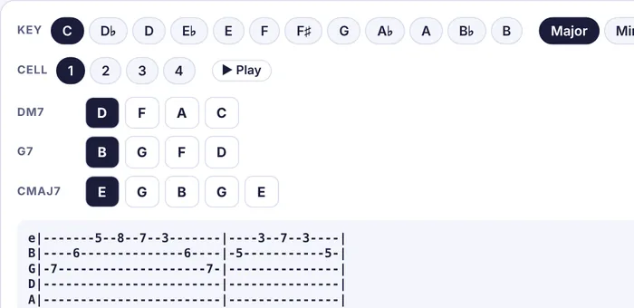

Guitar Theory Maps
A visual, playable guide to music theory for guitarists. Every idea is shown on a fretboard with a piano beside it, and everything you see can be clicked and heard.
Who it's for: guitarists who can fret single notes and a few basic chords. You do not need to read music.
C major: notes C, E, G. Played on the guitar as an open chord and shown on a one-octave piano.
C major
Open position · root, major third, fifth
Click any note or key to hear it. By the end of chapter 3 you will know what each of these is and how to play it in any key.
How it works
1. Read a little
Each lesson is a few short paragraphs and one colour-coded diagram.
2. Click and listen
Every dot, key, chord card and play button sounds, so you learn the sound with the name.
3. Play it
Each chapter ends with a checkpoint and a ten-minute routine for your guitar.
Inside the lessons
Real widgets from the chapters. Open one and every dot, key and button plays.

Interval map. Open lesson: The interval map on the neckPick a root and see how every note on the neck relates to it. Chapter 1.
Progression player. Open lesson: Progressions in Roman numeralsChoose a key and a progression, then hear it play chord by chord. Chapter 3.
Strumming editor. Open lesson: Strumming patternsSwitch strums on and off to build your own pattern, then play it. Chapter 9.
Tab line. Open lesson: Short ii – V – I cellsPlayable lines with tablature, in any key. Chapter 13.
The course
In order. Tick lessons off as you go and the page remembers where you are.
New to theory? Start with chapter 1 and follow only the lessons with a filled green dot. Purple ringed lessons go deeper and can wait for a second pass. Each chapter ends with a checkpoint chest.
- Core lesson
- Go deeper (optional)
- Checkpoint
Foundations
Chapters 1 to 3. Notes, intervals, chords and how they fit together in a key.
Intervals, Keys and Triads
12 lessons · 10 core · about 2 hours0/12 doneOpen chapter 1: Intervals, Keys and Triads- Open lesson: The twelve notes. Core lesson, not completed.
- Open lesson: How the guitar is tuned. Core lesson, not completed.
- Open lesson: Intervals: measuring the distance. Core lesson, not completed.
- Open lesson: The interval map on the neck. Core lesson, not completed.
- Open lesson: Interval shapes, string by string. Core lesson, not completed.
- Open lesson: Naming an interval properly. Core lesson, not completed.
- Open lesson: Flipped and stretched intervals. Go-deeper lesson, optional, not completed.
- Open lesson: The major scale. Core lesson, not completed.
- Open lesson: The circle of fifths. Core lesson, not completed.
- Open lesson: Triads: stacking two thirds. Core lesson, not completed.
- Open lesson: The seven triads inside a major key. Core lesson, not completed.
- Open lesson: Chapter 1 checkpoint. Chapter checkpoint, not completed.
Seventh Chords and Minor Keys
9 lessons · 5 core · about 1½ hours0/9 doneOpen chapter 2: Seventh Chords and Minor Keys- Open lesson: Seventh chords: stacking three thirds. Core lesson, not completed.
- Open lesson: Seventh chords on the neck. Core lesson, not completed.
- Open lesson: More chord colours: sus, 6, add9, 9 and altered 5ths. Go-deeper lesson, optional, not completed.
- Open lesson: Reading chord symbols. Core lesson, not completed.
- Open lesson: Relative and parallel minor. Core lesson, not completed.
- Open lesson: Why there are three minor scales. Core lesson, not completed.
- Open lesson: The scale harmonizer. Go-deeper lesson, optional, not completed.
- Open lesson: The practical minor key. Go-deeper lesson, optional, not completed.
- Open lesson: Chapter 2 checkpoint. Chapter checkpoint, not completed.
Function, Progressions and Modes
7 lessons · 4 core · about 1 hour0/7 doneOpen chapter 3: Function, Progressions and Modes- Open lesson: Chord function: home, away, tension. Core lesson, not completed.
- Open lesson: Progressions in Roman numerals. Core lesson, not completed.
- Open lesson: Cadences: how phrases end. Core lesson, not completed.
- Open lesson: The seven modes, bright to dark. Go-deeper lesson, optional, not completed.
- Open lesson: Matching a scale to a chord. Go-deeper lesson, optional, not completed.
- Open lesson: Pentatonic and blues scales. Core lesson, not completed.
- Open lesson: Chapter 3 checkpoint. Chapter checkpoint, not completed.
On the fretboard
Chapters 4 to 10. Moving chords and scales around the neck, making lines, and training your ear.
Substitution and Borrowed Chords
11 lessons · 5 core · about 1½ hours0/11 doneOpen chapter 4: Substitution and Borrowed Chords- Open lesson: Swapping chords that do the same job. Core lesson, not completed.
- Open lesson: Secondary dominants. Core lesson, not completed.
- Open lesson: Tritone substitution. Go-deeper lesson, optional, not completed.
- Open lesson: Borrowing from the parallel minor. Core lesson, not completed.
- Open lesson: Diminished passing chords. Go-deeper lesson, optional, not completed.
- Open lesson: The full palette of a key. Core lesson, not completed.
- Open lesson: Turnarounds and their upgrades. Go-deeper lesson, optional, not completed.
- Open lesson: Two standard forms, reharmonised. Go-deeper lesson, optional, not completed.
- Open lesson: One note, many chords. Go-deeper lesson, optional, not completed.
- Open lesson: Reharmonising cheat sheet. Core lesson, not completed.
- Open lesson: Chapter 4 checkpoint. Chapter checkpoint, not completed.
Chords Across the Neck
9 lessons · 4 core · about 1½ hours0/9 doneOpen chapter 5: Chords Across the Neck- Open lesson: Five shapes cover the whole neck. Core lesson, not completed.
- Open lesson: Barre chords from the E and A shapes. Core lesson, not completed.
- Open lesson: Slash chords and inversions. Core lesson, not completed.
- Open lesson: Spread triads and pedal points. Go-deeper lesson, optional, not completed.
- Open lesson: Drop 2 and drop 3 voicings. Go-deeper lesson, optional, not completed.
- Open lesson: A scale of chords up the neck. Go-deeper lesson, optional, not completed.
- Open lesson: Voicings built in fourths. Go-deeper lesson, optional, not completed.
- Open lesson: Voice leading: the shortest path. Core lesson, not completed.
- Open lesson: Chapter 5 checkpoint. Chapter checkpoint, not completed.
Scales and Arpeggios Across the Neck
7 lessons · 4 core · about 1 hour0/7 doneOpen chapter 6: Scales and Arpeggios Across the Neck- Open lesson: Five positions of one scale. Core lesson, not completed.
- Open lesson: The five pentatonic boxes. Core lesson, not completed.
- Open lesson: Three notes per string. Go-deeper lesson, optional, not completed.
- Open lesson: Arpeggios: chords played one note at a time. Core lesson, not completed.
- Open lesson: Practice patterns. Core lesson, not completed.
- Open lesson: Symmetrical and other scales. Go-deeper lesson, optional, not completed.
- Open lesson: Chapter 6 checkpoint. Chapter checkpoint, not completed.
Making Music: Lines and Practice
9 lessons · 6 core · about 1½ hours0/9 doneOpen chapter 7: Making Music: Lines and Practice- Open lesson: Chord tones are the targets. Core lesson, not completed.
- Open lesson: Guide tones: the 3rd and 7th. Core lesson, not completed.
- Open lesson: Approach notes and enclosures. Go-deeper lesson, optional, not completed.
- Open lesson: Building a line over ii – V – I. Core lesson, not completed.
- Open lesson: Soloing over the blues. Core lesson, not completed.
- Open lesson: Pentatonics in new places. Go-deeper lesson, optional, not completed.
- Open lesson: Phrasing: saying something. Core lesson, not completed.
- Open lesson: How to practise. Core lesson, not completed.
- Open lesson: Chapter 7 checkpoint. Chapter checkpoint, not completed.
Modal and Altered Harmony
8 lessons · 2 core · about 1 hour0/8 doneOpen chapter 8: Modal and Altered Harmony- Open lesson: Modes as home keys. Core lesson, not completed.
- Open lesson: The chords of every mode. Go-deeper lesson, optional, not completed.
- Open lesson: Brighter and darker on one root. Go-deeper lesson, optional, not completed.
- Open lesson: Scales from melodic and harmonic minor. Go-deeper lesson, optional, not completed.
- Open lesson: Altered dominant chords. Go-deeper lesson, optional, not completed.
- Open lesson: Triads on top: upper structures. Go-deeper lesson, optional, not completed.
- Open lesson: Which scale for which chord. Core lesson, not completed.
- Open lesson: Chapter 8 checkpoint. Chapter checkpoint, not completed.
- Open lesson: Beat, bar and tempo. Core lesson, not completed.
- Open lesson: Note lengths and subdivision. Core lesson, not completed.
- Open lesson: Time signatures. Core lesson, not completed.
- Open lesson: Strumming patterns. Core lesson, not completed.
- Open lesson: Syncopation. Core lesson, not completed.
- Open lesson: Straight and swing. Go-deeper lesson, optional, not completed.
- Open lesson: Moving an idea in time. Go-deeper lesson, optional, not completed.
- Open lesson: Chapter 9 checkpoint. Chapter checkpoint, not completed.
Ear Training and Real Songs
7 lessons · 5 core · about 1 hour0/7 doneOpen chapter 10: Ear Training and Real Songs- Open lesson: Intervals by ear. Core lesson, not completed.
- Open lesson: Chord qualities by ear. Core lesson, not completed.
- Open lesson: Progressions by ear. Go-deeper lesson, optional, not completed.
- Open lesson: Finding the key of a song. Core lesson, not completed.
- Open lesson: Capo and transposing. Core lesson, not completed.
- Open lesson: Learning a song from start to finish. Core lesson, not completed.
- Open lesson: Chapter 10 checkpoint. Chapter checkpoint, not completed.
Reference and practice
Chapters 11 to 13. Tools and playable material you dip into, in any order.
- Open lesson: The voicing builder. Go-deeper lesson, optional, not completed.
- Open lesson: Chords with open strings. Go-deeper lesson, optional, not completed.
- Open lesson: Fourth voicings from any scale. Go-deeper lesson, optional, not completed.
- Open lesson: Triads over triads. Go-deeper lesson, optional, not completed.
- Open lesson: The symmetry of diminished chords. Go-deeper lesson, optional, not completed.
- Open lesson: Chapter 11 checkpoint. Chapter checkpoint, not completed.
Advanced Scales and Arpeggios
7 lessons · 1 core · about 1 hour0/7 doneOpen chapter 12: Advanced Scales and Arpeggios- Open lesson: Two, three or four notes per string. Go-deeper lesson, optional, not completed.
- Open lesson: Every mode of melodic and harmonic minor. Go-deeper lesson, optional, not completed.
- Open lesson: Arpeggio library. Core lesson, not completed.
- Open lesson: Arpeggios borrowed from other chords. Go-deeper lesson, optional, not completed.
- Open lesson: Triad pairs. Go-deeper lesson, optional, not completed.
- Open lesson: Four triads, twelve notes. Go-deeper lesson, optional, not completed.
- Open lesson: Chapter 12 checkpoint. Chapter checkpoint, not completed.
- Open lesson: Short ii – V – I cells. Core lesson, not completed.
- Open lesson: Turnaround lines. Core lesson, not completed.
- Open lesson: Patterns around the cycle. Core lesson, not completed.
- Open lesson: Dominant chords that resolve elsewhere. Go-deeper lesson, optional, not completed.
- Open lesson: Diminished patterns. Go-deeper lesson, optional, not completed.
- Open lesson: Mode studies. Go-deeper lesson, optional, not completed.
- Open lesson: Walking bass lines. Core lesson, not completed.
- Open lesson: Chapter 13 checkpoint. Chapter checkpoint, not completed.